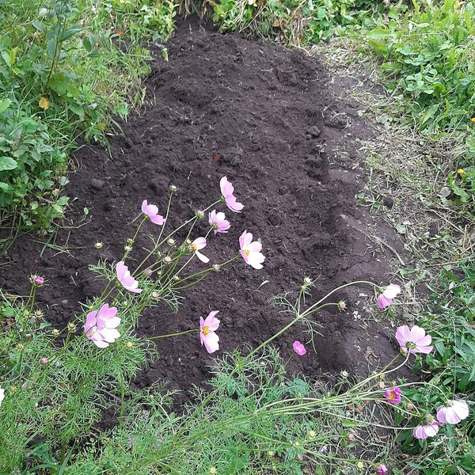

News · What's happening in the world

Antonelli gana, el título espera
El domingo 25 de octubre de 2026 Kimi Antonelli ganó en Austin desde la pole, pero la fiesta del título tiene que esperar, por lo menos hasta Ciudad de México.

El reloj en el corazón del átomo
En una sola semana de octubre de 2026, dos equipos en lados opuestos del mundo, cada uno por su cuenta, pusieron en marcha un reloj que late con el diminuto corazón de un átomo.

Tres goles de Díaz
El sábado 17 de octubre de 2026, Luis Díaz marcó tres goles en el 6-1 del Bayern al Leipzig, y el Manchester City y el Barcelona lo siguen ganando todo.

El salón que empezó en un jardín
En 1898, cada coche del primer salón del automóvil del mundo tuvo que demostrar que podía ir a Versalles y volver; en octubre de 2026, el mismo salón de París se llenó de pequeños coches eléctricos.

Singapur, por fin
El domingo 11 de octubre de 2026, Max Verstappen ganó por fin bajo las luces de Singapur: a la décima, y primero en todas las vueltas.

Los tigres volvieron
El 8 de octubre de 2026, un informe sobre los animales salvajes del mundo contó lo que se perdió, pero también lo que volvió: entre otras cosas, unos 2500 tigres más que en 2010.

De vuelta en Sepang, Verstappen gana otra vez
El domingo 4 de octubre de 2026 la lluvia tuvo a la Fórmula 1 esperando una hora y media, y luego Max Verstappen ganó en Sepang, donde había ganado por última vez nueve años antes.

Cincuenta años sin una mordedura
En septiembre de 2026, Chile recibió un certificado por algo que no pasó: en más de cincuenta años, nadie murió allí de rabia por culpa de un perro.

Los ojos de Timor Oriental
Uno de los países más jóvenes del mundo vence a la principal causa infecciosa de ceguera con cuatro herramientas sencillas, y en septiembre de 2026 la OMS lo hace oficial.

Uno de cada ocho
Una enfermera en Malaui pone la misma inyección pequeña durante años, y en mayo de 2026 por fin se sabe lo que ha conseguido.

El mes en que ganó el viento
En abril de 2026, por primera vez, el viento y el sol hicieron más electricidad en el mundo que el gas.

La selva que dejó de reducirse
Cada agosto, Brasil suma la selva que ha perdido la Amazonia en el año, y en 2026 el total fue el más bajo en trece años.

La bóveda en la montaña
Dentro de una montaña helada, el mundo guarda una copia de seguridad de su comida.

Las primeras manos
Las primeras manos que sostienen a la mayoría de los bebés del mundo son las de una matrona, y en diciembre de 2023 la UNESCO dijo que lo que ella sabe es un tesoro.

Las ballenas que vuelven a cantar
Hace cincuenta años el océano se estaba quedando callado, y hoy las ballenas jorobadas vuelven a cantar en aguas donde nadie las oía desde hacía un siglo.

El bosque de bolsillo
Es del tamaño de una pista de tenis, pero este bosquecito está devolviendo los pájaros y la sombra fresca a una calle de la ciudad.

Los robots que limpian el océano
Unos robots pequeños, que flotan en los ríos, atrapan el plástico antes de que llegue al mar.

Una ciudad aprende a compartir sus calles
Una ciudad les devuelve las calles a las bicis y a la gente, y el tráfico, en vez de empeorar, mejora.
Life Lessons · Little stories, bigger ideas

Mira dos veces
En marzo de 1966, una revista nueva puso máquinas de coser y batidoras una al lado de la otra, y hoy esa misma idea tan sencilla está impresa en un número pequeño en la estantería de la tienda donde compras.

La silla pequeña
En 1907, una médica de Roma les dio a unos cincuenta niños pequeños sillas que podían llevar ellos solos, y descubrió qué hacen los niños cuando pueden elegir.

Una pelota hecha con un calcetín
En los años cuarenta, un niño pobre de Brasil daba patadas por la calle a un calcetín lleno de papel de periódico; a los diecisiete años, metió dos goles en una final del Mundial.

El pato de madera
En 1932, un carpintero de un pueblo danés, sin casas que construir, empezó a hacer juguetes de madera, y una noche mandó a su hijo de vuelta a la estación para barnizar otra vez todos los patos.

El cuaderno
Un chico de la India aprende matemáticas él solo con un libro prestado, llena cuadernos de ideas nuevas y, en 1913, se atreve a escribir a un desconocido.

Lo que se queda
Lena tiene una lista de trabajos que van a desaparecer; su abuela, que arregla relojes desde hace cincuenta años, tiene una más corta.

La décima moneda
Tomas siempre está sin dinero el día veinte, hasta que la mujer del quiosco le enseña adónde va la primera moneda de cada diez.

Los dos jardines
Una mirada por encima de la valla, y Nadia deja de ver su propio jardín.

La sopa de piedra
Una viajera con hambre, un pueblo que no le abre la puerta y una sopa que empieza con una simple piedra.

La panadería que cerraba al mediodía
A una panadera que lo vende todo antes del mediodía le repiten que tiene que crecer, y ella siempre pregunta: ¿para qué?

El cántaro agrietado
Un cántaro se avergüenza de su grieta, hasta que ve lo que ha ido creciendo, en silencio, en su lado del camino.

La cartera en el tren
Un viajero cansado encuentra la cartera de una desconocida con mucho dinero dentro, y solo le queda una parada para decidir qué hace.

El frasco de piedras
Una profesora mete en un frasco piedras grandes, piedras pequeñas y arena, y después pregunta qué significa.
Health Tips · Small habits, real results

Cuarenta minutos en Nápoles
En 2005, un pediatra de Nápoles quiso saber qué pasa con la lactancia cuando el padre aprende a echar una mano, y para encontrar la respuesta le bastó una clase.

La región que cambió su pan
En 1972, una región de Finlandia donde morían más hombres del corazón que en ningún otro lugar del mundo empezó a cambiar lo que ponía en el pan.

El mes del padre
En 1974 Suecia dejó que el padre se quedara en casa con su bebé, y casi ninguno lo hizo; en 1995 le guardó un mes solo para él, y eso cambió lo que hace un padre.

El tarro del hospital
En 1928, en Bombay, una médica inglesa curó a embarazadas agotadas con un tarro barato de crema de levadura, y lo que descubrió es hoy un consejo para todos los embarazos.

El hombre que llevó una compresa
En 1998, un hombre del sur de la India ve a su mujer esconder un trapo sucio, y decide hacer una compresa barata y probarla en él mismo.

La limpieza que no puedes hacer tú
Mateo se cepilla dos veces al día desde hace treinta años; entonces, ¿por qué una higienista le enseña una línea amarilla que ningún cepillo va a mover?

Tu sangre tiene un nombre
Selin dona sangre por primera vez y quiere saber por qué la bolsa tiene una letra; la respuesta empieza en Viena, en 1901.

Dos horas de verde
En una isla con mucho viento, una doctora escribe una receta sin pastillas: dos horas a la semana entre cosas verdes, en trozos, como quieras.

Piel con piel
Un hospital no tiene suficientes incubadoras, y un médico usa la incubadora más antigua que hay: el pecho de una madre.

La siesta de veintiséis minutos
La siesta más famosa de la historia se la echó un piloto en la cabina de un avión, con un científico tomando notas, y fue corta a propósito.

La cuchara lenta
¿Por qué la carta del estómago al cerebro siempre llega veinte minutos tarde?

Descansa la vista
Una regla con tres veintes dentro, para quien acaba el día de pantallas con los ojos ardiendo.

La primera leche
Por qué esas gotas doradas tan raras de los primeros días son justo lo que pide un recién nacido.

Tres cosas buenas
Un cuaderno verde y una costumbre antes de dormir cambian, poco a poco, cómo se vive un día difícil.

La luz de la mañana
Rafael lo intentó todo para dormir mejor por la noche, y la solución estaba en sus mañanas.

La respiración de cuatro tiempos
El truco de un capitán de barco para el mal tiempo funciona igual de bien diez minutos antes de un examen.

Diez minutos caminando
¿No tienes tiempo para el gimnasio? Resulta que un paseo de diez minutos después de comer hace más de lo que crees.

Por qué la abuela tenía razón sobre el sueño
«Acuéstate temprano», le decía siempre su abuela, y resulta que la ciencia le da la razón.
Book Quotes · Words worth remembering

Cultivar nuestro jardín
En febrero de 1759, Voltaire compró una vieja casa señorial en un pueblo pobre cerca de Ginebra, pocas semanas después de que su libro nuevo terminara con una frase sobre un jardín, y luego se puso a cavar uno de verdad.

Un viaje de mil li
En 1993, unos ladrones entraron en una tumba de China, pero dejaron el bambú, y en él estaba la copia más antigua de un libro con una de las frases más conocidas del mundo.

Una habitación propia
En octubre de 1928, Virginia Woolf les contó a las estudiantes de Cambridge lo que necesita quien escribe, y su respuesta todavía cabe en una línea.

Una regla antigua
Alrededor del año 261 antes de Cristo, un rey indio ganó una guerra, contó los muertos y se detuvo, y una línea de un libro budista muy antiguo dice lo que él había entendido.

Ritmo y número
En 1970, un estudiante de física de Londres empieza un doctorado que, por culpa de su grupo de música, no termina hasta treinta y siete años después; Platón explica por qué la guitarra nunca fue un desvío.

Cinco promesas
Una pequeña mentira el martes, tres malas noches y unos versos de hace dos mil años, en una sala de espera, que dicen exactamente lo que un árbol se hace a sí mismo.

Todo lo que somos
El tren llega con cuarenta minutos de retraso y Daniel nota cómo el día se le tuerce en la cabeza; los primeros versos de un libro muy antiguo hablan justo de eso.

Actos sin historia
Por qué George Eliot terminó su gran novela con una heroína de la que nadie se acuerda, y qué tiene que ver eso con tu semana.

Nunca inútil
Una frase que Charles Dickens le dio a un personaje de su última novela completa, y el niño para el que nunca dejó de escribir.

La vida es larga
La respuesta tranquila de un filósofo romano a la queja más antigua del mundo, y una noche cualquiera para probarla.

Una hora de lectura
Las grandes ideas de Montesquieu ayudaron a dar forma al gobierno moderno, pero la frase que la gente todavía copia de sus cuadernos es una pequeña, sobre leer.

Eso que tiene plumas
La pequeña imagen con plumas que Emily Dickinson le dio a la esperanza, y por qué todavía nos parece verdad.

Lo que Amy March aprendió sobre las tormentas
Una frase de Mujercitas, de Louisa May Alcott, dicha en un día tranquilo, y lo que de verdad significa sentirse preparado.

El secreto para salir adelante
Una frase famosa para dejar de dejar las cosas para mañana, y una sorpresa sobre de dónde viene de verdad.
Cooking Recipes · Cook while you learn

El pollo que acabó en los tribunales
El butter chicken nació, según dicen, de unas sobras de pollo seco en un restaurante de Delhi en 1947, y en 2024 dos familias acabaron en los tribunales discutiendo qué abuelo lo inventó.

La sopa de la libertad
Cada 1 de enero, los haitianos comen una sopa de calabaza que, según dicen, antes no podían probar, y en 2021 la UNESCO la puso en su lista del patrimonio vivo.

La tarta al revés
Desde 1894, dos hermanas tenían un hotel enfrente de una estación de Francia, y una de ellas hacía su tarta de manzana al revés: aquí tienes la historia de verdad y la receta.

La salsa que tarda toda la mañana
En 1891 ningún editor quiere el libro de cocina de Pellegrino Artusi, así que lo imprime él mismo, y dentro va una de las primeras recetas escritas de la salsa de Bolonia.

Espaguetis de medianoche
Son las doce y diez de la noche en Nápoles, hay cuatro amigos muertos de hambre y en el armario solo quedan espaguetis, ajo, aceite y un pimiento seco: eso es una cena.

Pan perdido
El domingo, el pan del jueves podría romper una ventana; en la cocina de Colette nada se pierde, aunque el plato se llame «pan perdido».

Una olla de lentejas
La mejor cena barata del mundo necesita una olla, veinte minutos y un vecino que conoce el truco.

La manzana asada
Un postre de cuando el azúcar todavía era caro: una manzana, unas nueces, una cucharada de miel y una cocina que huele a diciembre.

Una sartén de rojo y oro
Una sartén, una salsa de tomate y unos huevos que se cuajan dentro: un desayuno que va directo a la mesa.

El pan paciente
Cuatro ingredientes, un minuto removiendo y una noche de espera que amasa por ti.

Una bandeja de colores
Una bandeja de horno, las verduras de colores que tengas en la nevera y media hora para hacer otra cosa.

Onigiri
Un truco japonés de más de mil años para el almuerzo: solo necesitas arroz, sal y tus dos manos.

Leche dorada
Una taza caliente y cinco minutos tranquilos: la bebida de la noche que las familias de la India preparan desde hace generaciones.

La sopa de tomate del abuelo
Una olla, cinco ingredientes y una sopa que sabe a tarde fría en casa.

Un desayuno de cinco minutos: tostada de aguacate
Sin fogones ni horno: solo pan, un aguacate y cinco minutos.
Read them at A2, B1 and B2
Tap any word, listen along, save words to practise. No account, no ads.
Get Journeva on the App Store